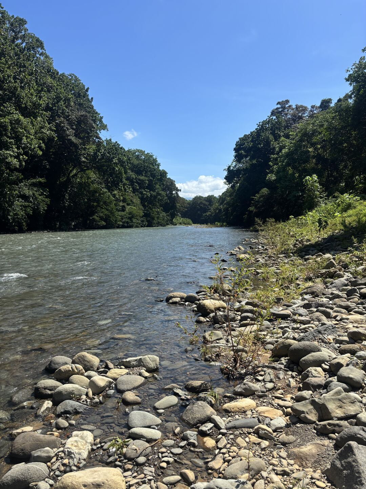

There's a road that runs parallel to the Barú River just outside Dominical, Costa Rica. It's the main way in and out. And a few times a year — sometimes more — the river overtops its banks and swallows that road completely.
When that happens, you don't drive through it. You wait. Or, if nobody warned you it was coming, you find out the hard way.
I kept finding out the hard way.
Not because I wasn't paying attention. I was checking apps constantly — weather apps, rain radar, surf forecasts. I live here. I run a property on the river. I needed to know whether the road was going to flood, and I was checking everything I could find.
None of it told me what I needed to know.
The apps would show rain totals for Dominical. Fine. But the Barú doesn't just flood from the rain you can see outside your window. It floods when it rains hard in Tinamastes, 20 kilometers upstream. It floods when the tide is pushing back against the mouth. It floods when the soil has been bone dry for two months and suddenly can't absorb anything. All of those things can be true at once, or none of them, and no single app was putting it together.
So I built one that does.
The Barú Flood Index pulls live rainfall data from three points across the watershed, cross-references it with tide levels at Bahía Uvita, factors in the lunar phase, and runs it through a soil moisture model that accounts for whether the ground can actually absorb what's falling. It spits out a single number: LOW, MODERATE, or HIGH. Know before you go.
It's free. It always will be. This is a community tool, not a product.
If you live near the Barú, visit River Soul, drive into Dominical, or just want to know what the river is doing before you leave the house — this is what I built because I needed it and it didn't exist.
Check the live flood index →